A complete walkthrough of the Novyx Barbershop admin dashboard — managing your catalog, staff, payroll, attendance and reports.
Product: Novyx Barbershop — Queue & Booking System Audience: Shop owner / administrator Version: 1.1 · Issued: June 2026
Confidential · For shop management use
NOVYX · ADMIN MANUALIntroduction
Welcome
About this manual
This manual explains everything an administrator can do in the Novyx Barbershop admin dashboard. The admin area is where you run the business behind the scenes: the menu of services and products customers see, the staff who work the floor, their pay and attendance, and the reports that tell you how the shop is doing.
Each chapter covers one screen. You'll find a short description of what the screen is for, an annotated screenshot, step-by-step instructions for the common tasks, and a field-by-field reference table so nothing is left to guesswork. Look out for the coloured callout boxes — they flag tips, things to be careful about, and important notes.
Who can open the admin area
The admin dashboard is restricted to administrator accounts only. Barbers use the separate, login-free "staff mode" to run the queue and never see these screens. See Chapter 1 — Getting Started for how logging in works.
How the app is organised
The left sidebar groups every screen into four areas. This manual follows the same order:
Overview — the Dashboard (your daily snapshot).
Catalog — Services, Products and Discounts (what customers can buy).
People — Staff, Attendance and Pay (your team and their wages).
System — Reports, the QR Code, and Settings (year-end exports, the customer QR, and the live/test switch).
NOVYX · ADMIN MANUALContents
Contents
Table of contents
1Getting Started — Logging in & navigation
2Dashboard — Your daily snapshot
3Services — The cuts & treatments menu
4Products — Pomade & care inventory
5Discounts — Promo codes
6Staff — Barbers & admins
7Attendance — Shifts & breaks
8Pay — Payroll, commission & salaries
9Reports — Year-end export & archive
10QR Code — The customer queue QR
11Settings — Database mode (Live / Test)
AQuick reference & glossary
NOVYX · ADMIN MANUAL1 · Getting Started
Chapter 1
Getting Started
Purpose: Sign in to the admin dashboard and find your way around the sidebar.
1.1 Logging in
Open the app and you'll reach the sign-in screen. It is shared by admins and staff, but only an administrator's email and password will open the admin dashboard.
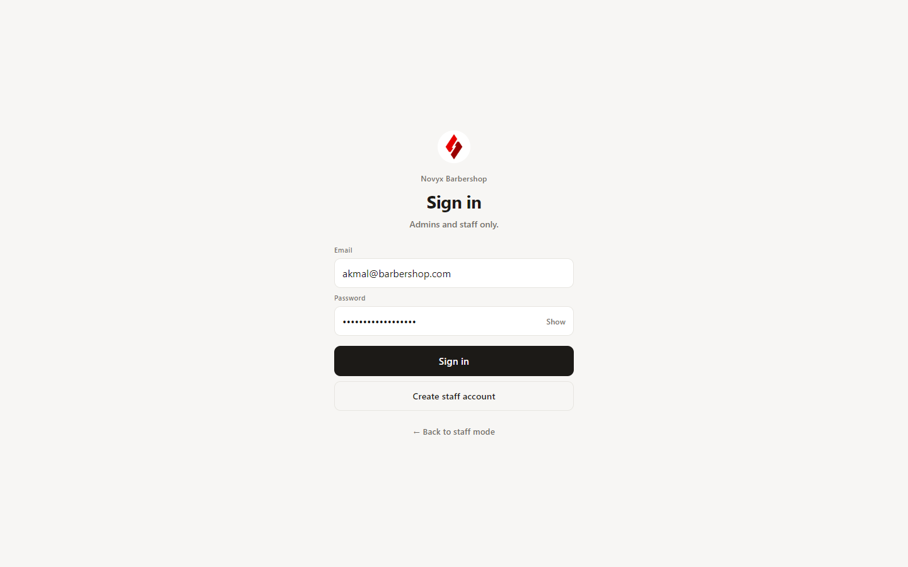
The sign-in screen — "Admins and staff only."
Enter your administrator Email in the first field.
Enter your Password. Tap Show to reveal what you typed if you want to double-check it.
Tap Sign in. You'll land on the Dashboard.
The two links below the button are not part of normal admin sign-in: Create staff account is used when first setting a person up, and ← Back to staff mode returns to the login-free barber queue.
Security — you log in every time
For safety, the admin session is never remembered. The moment you leave the admin area — navigating away, closing the tab, or going back to staff mode — you are signed out automatically. This means you must enter your password each time you open the admin dashboard. It is intentional, so an unattended iPad can't expose your business data.
1.2 The sidebar & navigation
Every admin screen shares the same left sidebar. Screens are grouped under four headings, and your account sits at the bottom with a sign-out button.
Group
Screens
What you manage there
Overview
Dashboard
Today's revenue, queue and per-barber performance, plus this month's charts.
Catalog
Services · Products · Discounts
Everything a customer can choose or pay for.
People
Staff · Attendance · Pay
Your team, the hours they work, and their wages.
System
Reports · QR Code · Settings
Annual PDF exports, the customer-facing QR code, and the live/test database switch.
Tip — signing out
To leave safely, tap the sign-out icon next to your name at the bottom of the sidebar. You'll be returned to the login screen.
NOVYX · ADMIN MANUAL2 · Dashboard
Chapter 2
Dashboard
Purpose: A live, at-a-glance view of how the shop is doing today and this month. This screen is read-only — there's nothing to set up here, just numbers to read.
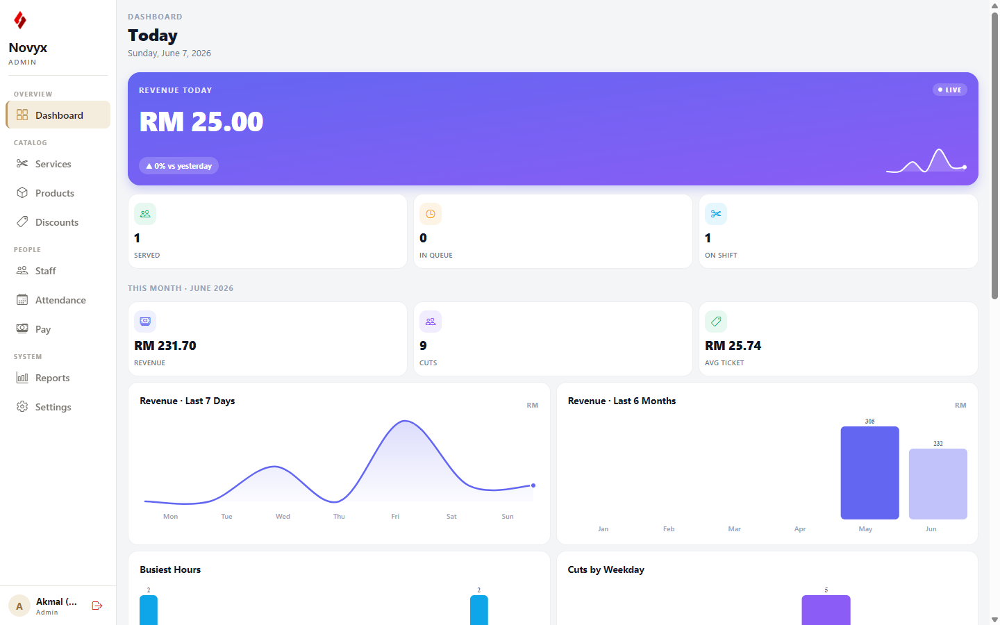
The Dashboard — today's revenue, KPI tiles, and the month's analytics charts.
2.1 Today, at the top
Revenue today — the large purple card. The LIVE tag and the small spark-line show it updates in real time as cuts are completed. The chip beneath compares today to yesterday.
Served / In queue / On shift — three tiles: customers finished today, customers currently waiting, and barbers clocked in right now.
2.2 This month
Below the date band labelled This Month, three tiles summarise the month so far — Revenue, Cuts (customers served) and Avg ticket (average spend per customer). Under them sits a grid of charts:
Chart
What it tells you
Revenue · Last 7 Days
The daily takings trend across the past week.
Revenue · Last 6 Months
Month-by-month revenue, in Ringgit.
Busiest Hours
Which times of day bring the most customers.
Cuts by Weekday
Which days of the week are busiest.
Service Mix
The share of revenue each service contributes.
Completion · This Month
Completed vs cancelled jobs, as a percentage.
Top Barbers · Revenue
Your highest-earning barbers, ranked.
Discount Usage
How many cuts used a promo code vs paid full price.
2.3 Per barber, today
At the bottom, one card per barber shows whether they're On shift or Off, plus their Cuts, customers In queue and Revenue for the day.
Tip — pull to refresh
The dashboard refreshes itself live, but you can always pull the page down to force an immediate refresh. The "Updates live" note at the very bottom confirms the live connection.
NOVYX · ADMIN MANUAL3 · Services
Chapter 3 · Catalog
Services
Purpose: Define the menu of cuts and treatments customers can pick from the queue — each with a price and an expected duration.
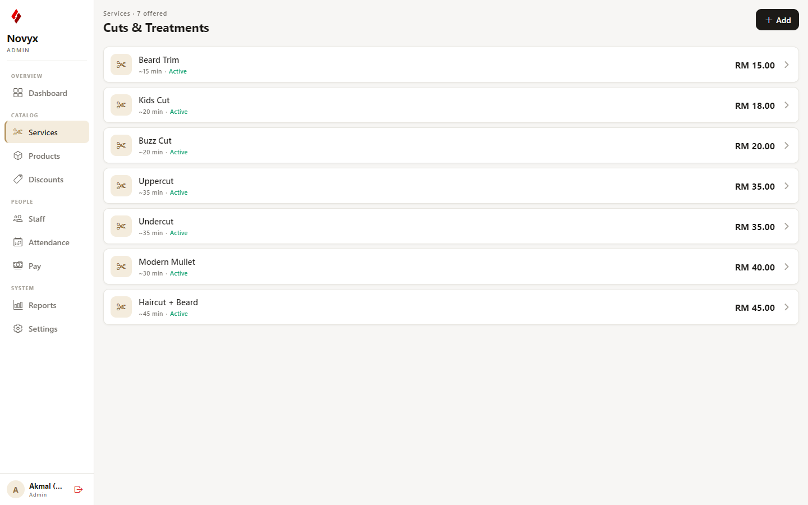
The Services list — name, duration, status and price for each offering.
The header shows how many services are offered. Each row lists the service name, its approximate duration (e.g. ~20 min), an Active or Inactive status, and the price. Inactive services appear dimmed and are hidden from customers.
3.1 Adding or editing a service
Tap Add (top-right) to create one, or tap any existing row to edit it. Both open the same editor, which shows a live preview of how the row will look as you type.
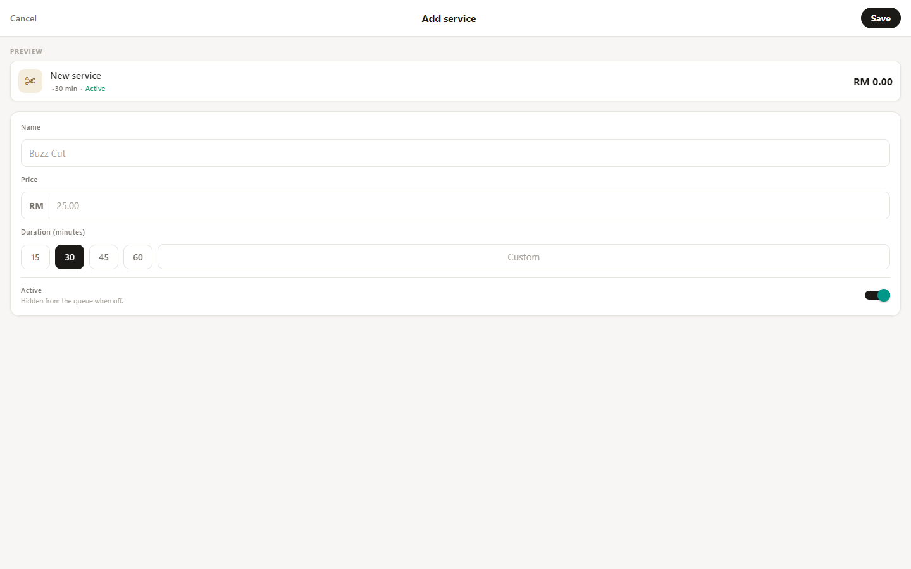
The "Add service" editor with a live preview at the top.
Enter the Name (for example, "Buzz Cut").
Enter the Price in Ringgit.
Pick a Duration — tap one of the quick chips (15, 30, 45, 60) or type a custom number of minutes.
Leave Active on so it appears in the queue, or switch it off to hide it.
Tap Save. Tap Cancel to discard.
Field
Notes
Name
Required. Shown to customers in the queue.
Price (RM)
Required. The amount charged for this service.
Duration (minutes)
Quick chips for 15 / 30 / 45 / 60, or type any custom value.
Active
"Hidden from the queue when off." Use this to retire a service without deleting it.
NOVYX · ADMIN MANUAL4 · Products
Chapter 4 · Catalog
Products
Purpose: Manage the counter products you sell alongside haircuts — pomade, wax and other care items.
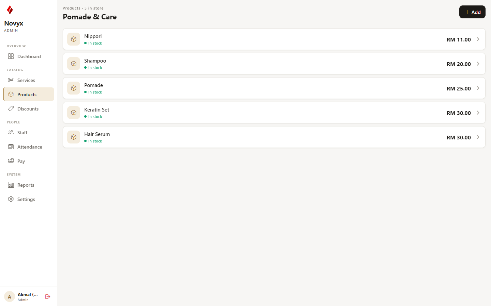
The Products list — each item with its price and stock status.
Products work just like services, but with a simpler form. Each row shows the product name, price, and a green In stock or red Out of stock indicator. Out-of-stock items are dimmed and hidden from the counter.
4.1 Adding or editing a product
Tap Add, or tap an existing product to edit it.
Enter the Name (for example, "Pomade").
Enter the Price in Ringgit.
Set In stock on or off.
Tap Save.
Field
Notes
Name
Required. The product's display name.
Price (RM)
Required. Selling price.
In stock
"Hidden from the counter when off." Switch off when you run out, switch back on when restocked.
NOVYX · ADMIN MANUAL5 · Discounts
Chapter 5 · Catalog
Discounts
Purpose: Create promo codes customers can apply for a percentage off — optionally limited by a number of uses and an expiry date.
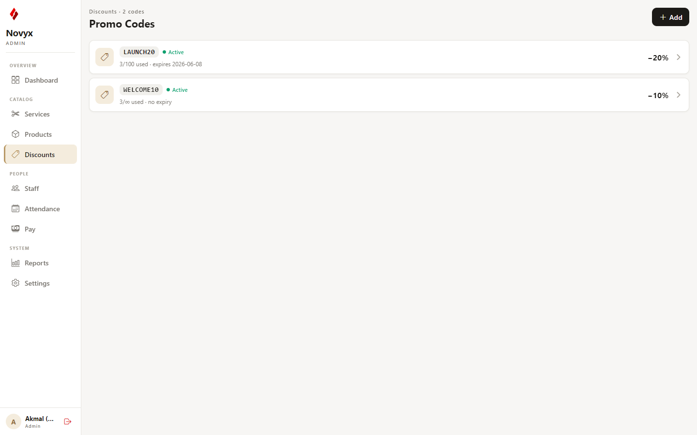
The Promo Codes list — code, status, usage and the discount amount.
Each row shows the code, a status pill, how many times it's been used, its expiry, and the percentage off. The status is automatic:
Active — switched on, not expired, uses remaining.
Expired — past its expiry date.
Used up — reached its maximum number of uses.
Inactive — manually switched off.
5.1 Adding or editing a code
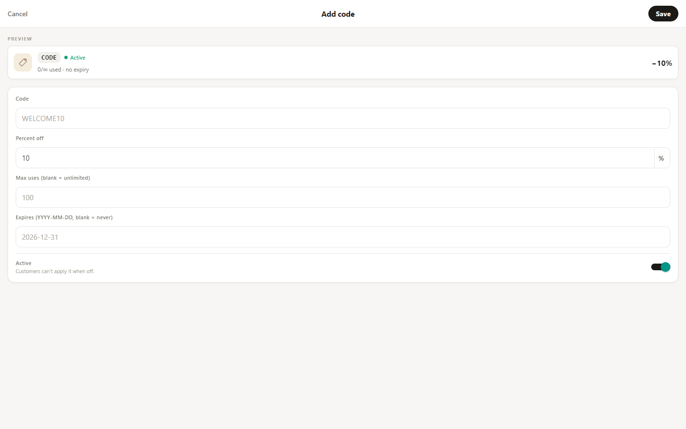
The "Add code" editor.
Field
Notes
Code
Required. Automatically forced to UPPERCASE with spaces removed (e.g. WELCOME10).
Percent off
Required. A whole number from 1 to 100.
Max uses
Optional. Leave blank for unlimited uses; otherwise a positive number.
Expires
Optional. Date in YYYY-MM-DD format; leave blank for no expiry.
Active
"Customers can't apply it when off."
Note
A code only counts as truly usable when it is Active, not expired, and has uses left. Turning Active off is the quickest way to pause a promotion without losing its usage history.
NOVYX · ADMIN MANUAL6 · Staff
Chapter 6 · People
Staff
Purpose: Create and manage every person in the shop — barbers and fellow admins — including their login, role, and how they're paid.
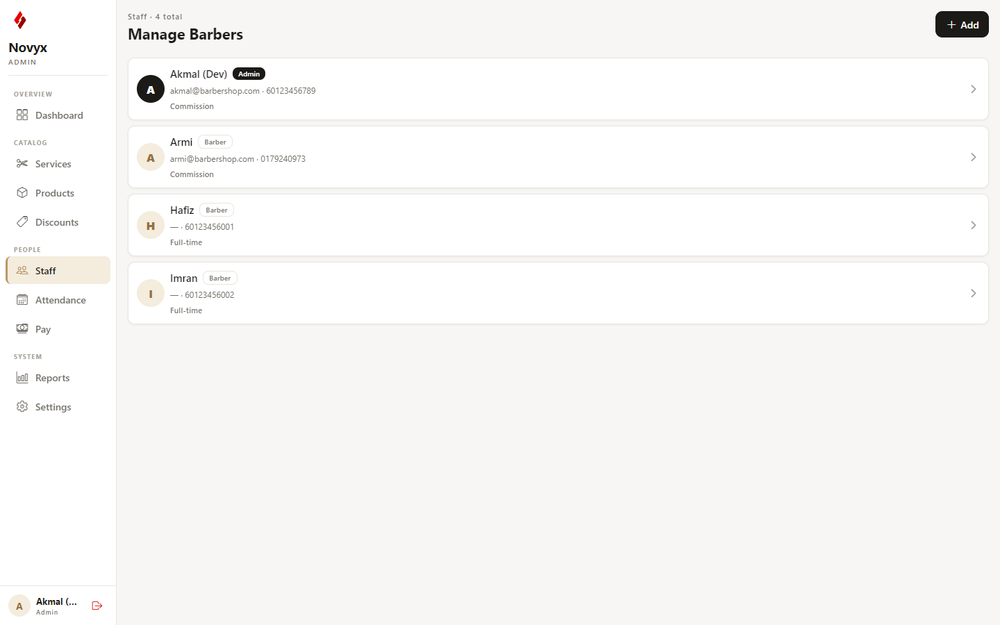
The Manage Barbers list — each person with role, contact details and employment type.
Each card shows an avatar, the person's name, an Admin or Barber role, their email and phone, and their employment type. An Inactive badge appears if their account is switched off.
6.1 Adding a new staff member
Tap Add to open the staff editor. Creating someone here provisions both their staff record and their login account in one step.
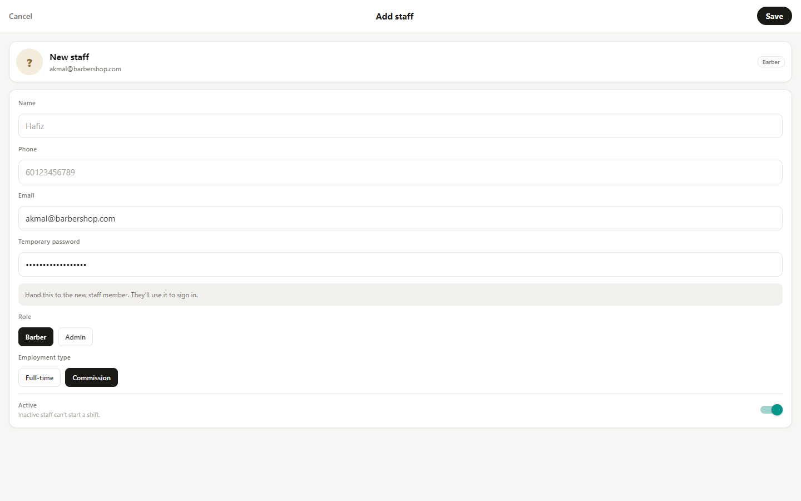
The "Add staff" editor with a live preview card.
Field
Notes
Name
Required.
Phone
Required. Used for contact (Malaysia format, e.g. 60123456789).
Email
Required when creating. This becomes their login. It cannot be changed afterwards.
Temporary password
Required when creating; at least 6 characters. Hand this to the new staff member — they sign in with it.
Role
Choose Barber or Admin. Admins can open this dashboard; barbers cannot.
Employment type
Choose Full-time (base salary + commission) or Commission (commission only). This drives how Pay is calculated.
Active
"Inactive staff can't start a shift."
6.2 Editing a staff member
Tap any person to edit them. The form is the same, except the Email is locked (it's tied to their login) and there's no password field. To change role, employment type, phone, or active status, edit and tap Save.
Important — email is permanent
Because the email address is the person's login identity, it can't be edited once the account exists. If someone genuinely needs a different email, create a new staff record for them.
NOVYX · ADMIN MANUAL7 · Attendance
Chapter 7 · People
Attendance
Purpose: See exactly when each barber worked — their shifts, breaks, hours and the customers they served — across a whole month or on any single day.
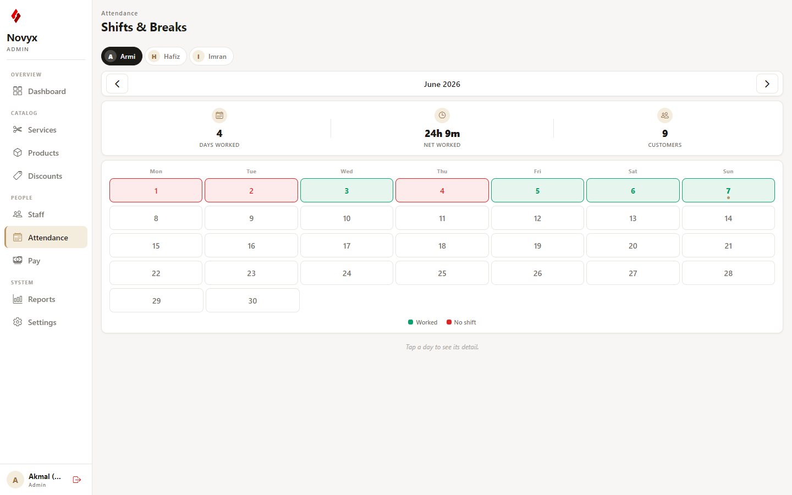
The month view — pick a barber, then read the colour-coded calendar.
7.1 Choosing what to view
Tap a barber's pill at the top to choose whose attendance to view.
Use the ‹ › arrows to move between months; tap Today to jump back to the current month.
Read the summary: Days worked, Net worked (total hours after breaks) and Customers served that month.
On the calendar, green days are days the barber worked and red days are days with no shift. Today is marked with a small dot.
7.2 Reading a single day
Tap any day to open its detail card, which breaks down that shift completely.
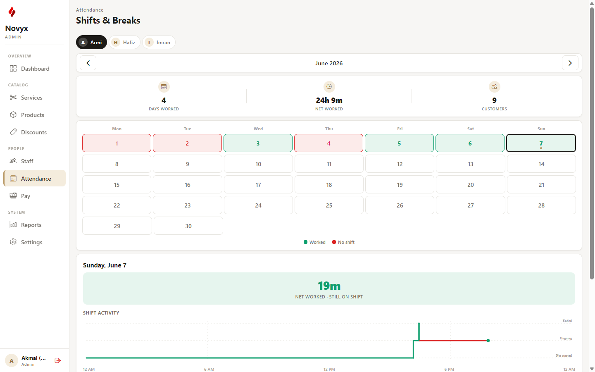
A day's detail — net hours, an activity timeline, breaks and totals.
Item
Meaning
Net worked (hero)
Hours actually worked that day, with breaks removed. Shows "still on shift" if the barber hasn't clocked out.
Shift activity
A timeline across the day — green while working, red during breaks.
Breaks
Each break listed as start–end and its length.
Total shift time
Clock-in to clock-out, before breaks.
Customers served / Revenue
What the barber produced that day.
First in · Last out
The first clock-in and last clock-out times.
NOVYX · ADMIN MANUAL8 · Pay
Chapter 8 · People
Pay
Purpose: Work out and track what each barber is owed for a month — commission and base salary — and mark them as paid.
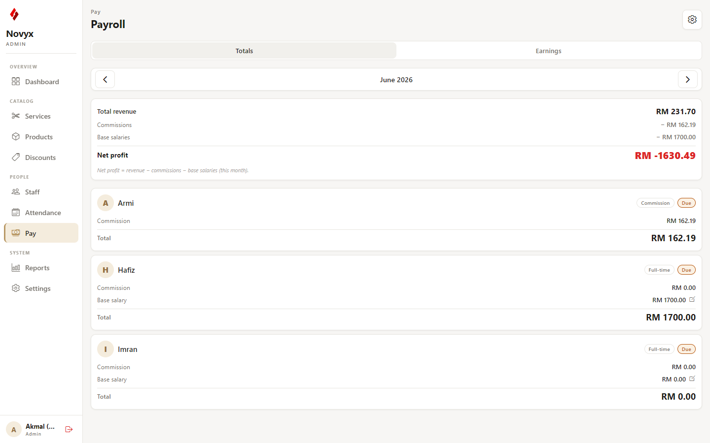
The Payroll screen — month summary and per-barber totals.
8.1 The two tabs
Totals — the default view: each barber's commission, base salary and total owed for the selected month, plus a shop-wide summary.
Earnings — a line-by-line list of every commission a barber earned, which you can filter by barber.
Use the ‹ › arrows to change month; This month jumps back to the current one.
8.2 The month summary
The summary card shows Total revenue, Commissions owed, Base salaries owed, and the resulting Net profit. The formula is printed right on the card:
Net profit formulaNet profit = revenue − commissions − base salaries (for the month). It can be negative early in the month before enough revenue has come in to cover salaries.
8.3 Marking a barber as paid
Find the barber's card for the selected month.
Tap the Due pill — it flips to Paid. Tap again to undo. This is tracked per barber, per month.
8.4 Adjusting a full-time barber's base salary
On a full-time barber's card, tap the Base salary row to open the editor. You have three choices:
Option
Effect
Save for this month only
Applies the amount as a one-off override for the selected month.
Set as standard (all months)
Makes this the barber's permanent monthly salary and clears the month override.
Reset this month to standard
Removes a one-off override and falls back to the standard (only shown when an override exists).
8.5 Commission rates (Pay settings)
Tap the gear icon at the top-right to open Pay settings, which set the shop-wide defaults.
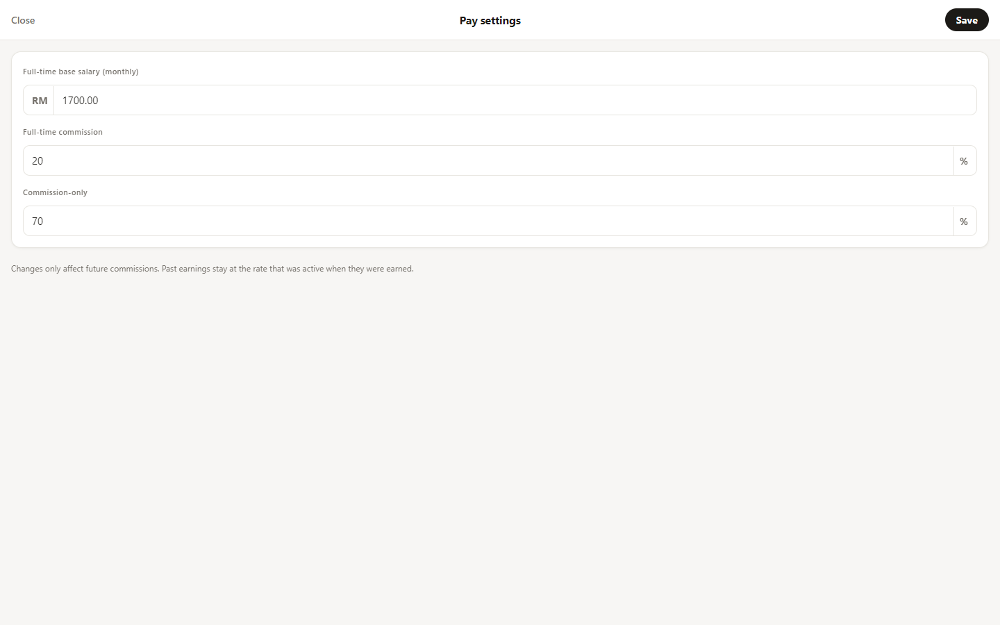
Pay settings — base salary and commission percentages.
Setting
Notes
Full-time base salary (monthly)
The default monthly salary for full-time barbers.
Full-time commission
Commission % for full-time barbers (0–100).
Commission-only
Commission % for commission-only barbers (0–100).
Note
Changing commission rates only affects future commissions — earnings already recorded keep the rate that applied at the time.
NOVYX · ADMIN MANUAL9 · Reports
Chapter 9 · System
Reports
Purpose: Review a full year of figures, download a polished PDF annual report, and — once you've saved that report — archive the year out of the database.
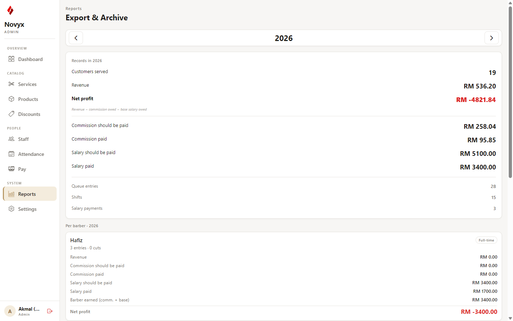
The Export & Archive screen — the year summary and per-barber breakdown.
9.1 Reviewing a year
Use the ‹ › arrows to pick a year (you can't go past the current one). The Records in [year] card totals everything: customers served, revenue, net profit, commission and salary (both what should be paid and what was paid), plus counts of queue entries, shifts and salary payments. Below it, a card per barber breaks the same figures down per person.
9.2 Generating the PDF report
Select the year you want.
Tap Generate PDF report for [year].
The app builds a branded PDF — summary, per-barber breakdown, salary payments, attendance, shifts and queue entries — and opens the print/share dialog so you can save it.
9.3 Archiving a year (Danger zone)
Danger zone — this permanently deletes data
The Delete [year] from database button removes that year's queue entries, earnings, shifts and salary payments. It does not touch your catalog (services, products, discounts) or staff. Always generate and save the PDF first — once deleted, the detailed records are gone.
Generate and save the PDF for the year (section 9.2).
Tap Delete [year] from database.
Read the confirmation dialog carefully, then tap Delete to confirm (or Cancel to stop).
NOVYX · ADMIN MANUAL10 · QR Code
Chapter 10 · System
QR Code
Purpose: Show and print the QR code customers scan to open the queue page on their phone and join the line.
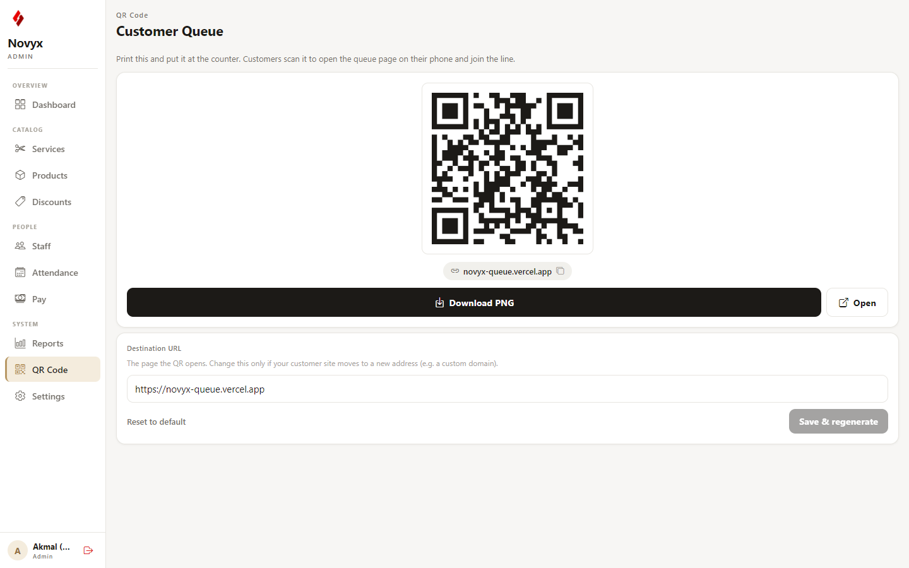
The Customer Queue QR code, with download, copy and edit options.
This screen displays a ready-to-print QR code that points at your customer queue website. Stick it on the counter or window — anyone who scans it lands straight on the page where they join the queue.
10.1 Sharing the QR code
Action
What it does
Download PNG
Saves the QR code as an image file you can print or send to a designer. (Use the admin app in a web browser to download.)
Open
Opens the customer queue page itself, so you can see exactly what a customer sees after scanning.
Link pill
Tap the address under the code to copy the customer link to your clipboard.
10.2 Changing where the QR points
The Destination URL card controls the address the QR opens. It already points at your live customer site, so you normally never need to touch it.
Edit the address in the Destination URL field.
Tap Save & regenerate — the QR code redraws to match the new address.
To undo, tap Reset to default to return to the standard customer site.
Important — reprint after you change the link
Changing the destination produces a new QR code. Any codes you already printed will still point at the old address, so download and reprint whenever you change this. Only change it if your customer site genuinely moves to a new address (for example, a custom domain).
Tip
Print the code large and at eye level near the entrance or counter. The clearer it is, the easier it is for customers to scan and join the queue themselves.
NOVYX · ADMIN MANUAL11 · Settings
Chapter 11 · System
Settings — Database Mode
Purpose: Switch the entire system — both this app and the customer-facing website — between the Live (real) database and the Test (practice) database.
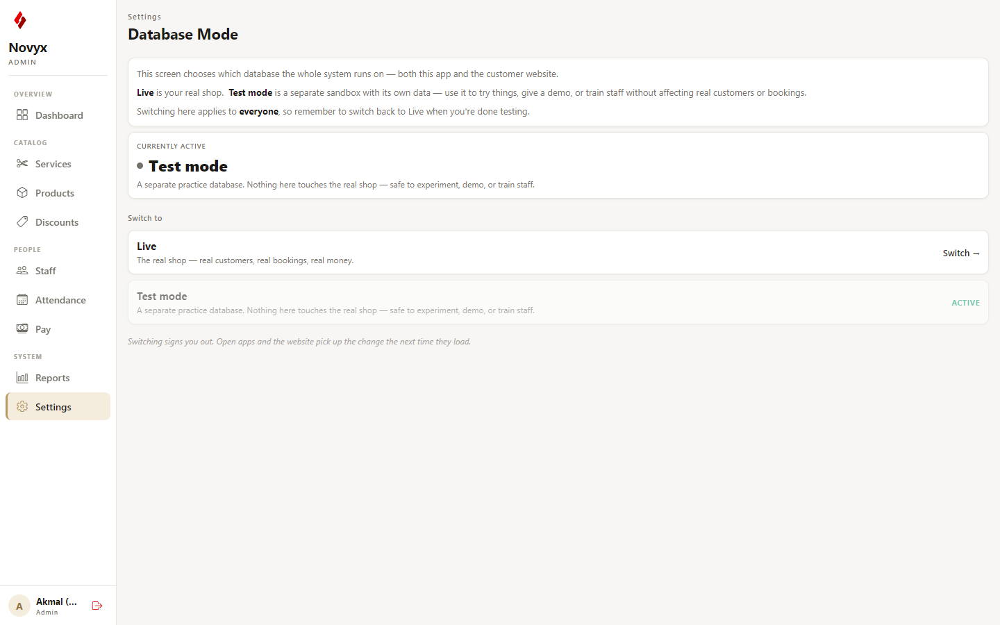
Database Mode — the current backend and the switch options.
This is one of the most powerful switches in the app. Live holds your real customers, revenue and staff. Test is a safe sandbox for practising or training — nothing there affects your real numbers. The status card shows which one is active right now (a green dot for Live, grey for Test).
11.1 Switching the backend
Under "Switch to", tap the Switch → button on the option you want (the current one is greyed out).
A confirmation appears: ⚠ Switch to Live / Test? Read it — the change affects everyone using the system.
Tap Switch to confirm. You'll be signed out (the old session belongs to the previous database) and the app reloads. Log back in to continue.
Important — this affects every device
Switching the database changes what every staff member and every customer sees, not just your screen. Only switch to Live when you're ready to take real customers, and only switch to Test when you intend to stop using real data. When in doubt, leave it where it is.
NOVYX · ADMIN MANUALAppendix A · Reference
Appendix A
Quick reference & glossary
A.1 "I want to…" quick index
Task
Go to
Add or change a haircut and its price
Services (Ch.3)
Mark a product as out of stock
Products (Ch.4)
Launch a promo code
Discounts (Ch.5)
Add a new barber and give them a login
Staff (Ch.6)
Check how many hours a barber worked
Attendance (Ch.7)
Work out wages and mark someone paid
Pay (Ch.8)
Change commission percentages
Pay → gear icon (Ch.8.5)
Download a year-end report
Reports (Ch.9.2)
Print the QR code customers scan to join the queue
QR Code (Ch.10)
Move from practice data to real customers
Settings (Ch.11)
A.2 Glossary
Term
Meaning
Active / Inactive
Whether a service, product, code or staff member is currently in use. Inactive items are hidden but not deleted.
Commission
A percentage of what a customer paid, earned by the barber who did the cut.
Full-time
A barber paid a fixed base salary plus commission.
Commission-only
A barber paid commission alone, with no base salary.
Net profit
Revenue minus commissions minus base salaries for the period.
Net worked
Hours on shift after break time is removed.
Avg ticket
Average amount each customer spends.
Live / Test
Live is the real database; Test is a practice sandbox. See Ch.11.
A.3 Good habits
Always sign out when you step away — the app won't remember you.
Generate the PDF before archiving a year; deletion can't be undone.
Use Inactive rather than deleting, so you keep the history.
Double-check you're on the right database mode before a busy day.
NOVYX BARBERSHOP · ADMIN USER MANUAL · v1.1 · JUNE 2026 · END OF DOCUMENT